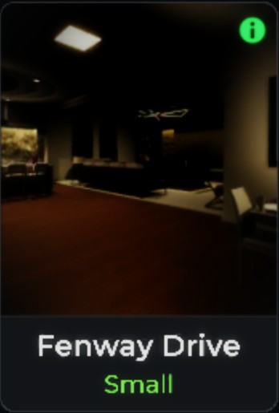
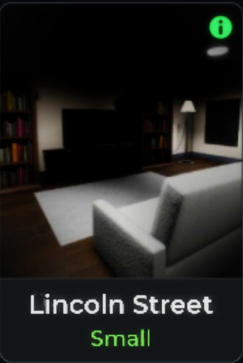
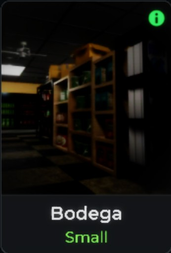
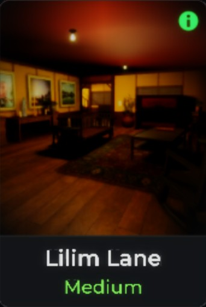
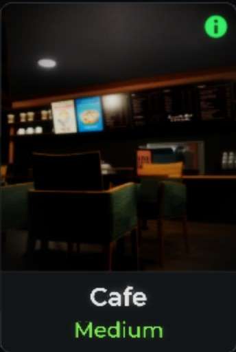
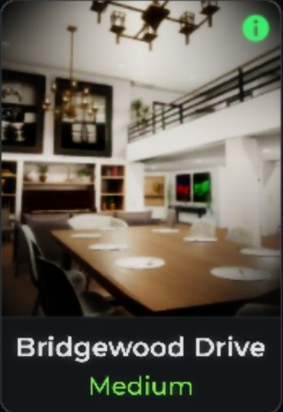
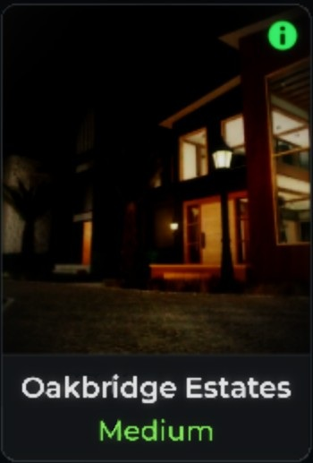
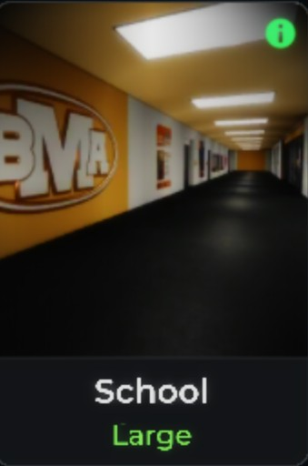
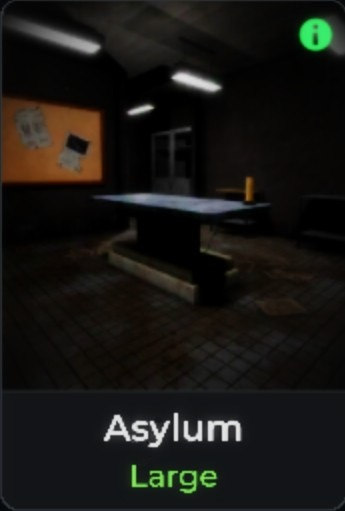
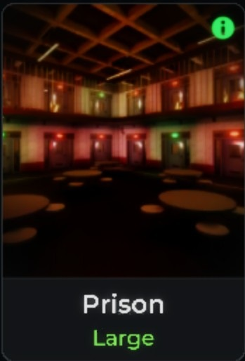

Click on any job site button above to view critical hiding spots and fuse box locations.

Fuse Box: Always inside the Kitchen Pantry.
Strategy: Easiest starter setup. Use the main Bedroom closets to quickly dodge hunts, or loop safely around the living room tables.

Fuse Box: Located inside the Garage.
Strategy: Very compact layout. Check the Master Bedroom and Dining room early for Cursed Mirror spawns.

Fuse Box: Spawns either inside the Garage or straight down in the Basement.
Strategy: Clear your paths early. Use custom game modes here to safely scout line-of-sight loops without hunts active.

Fuse Box: Found inside the downstairs Washroom or the first room upstairs.
Strategy: Tight space alerts! Avoid sticking to thin shelf corridors where breaking line-of-sight is hard. Use the Cold Storage room for loops.

Fuse Box: Located outside in the laundry shed structure.
Strategy: Watch your sanity values. The outside areas give extra running paths, but moving back inside can bottleneck your team easily.

Fuse Box: Spawns inside the Kitchen room or back in the Alleyway.
Strategy: Use the counter spaces to block ghost pathfinding lines. Watch your exit pathways if utilizing the Alley layout.

Fuse Box: Both spawns are downstairs—either in the Storage Room or directly in the Garage.
Strategy: Great structural balance. Ensure you check the perimeter paths early to secure an escape route into the open yard.

Fuse Box: Spawns at the far end of the interior hallway, or out on the exterior building corner.
Strategy: Spreads across multiple segmented house layouts. Coordinate with tools like the Spirit Box to rapidly narrow down the correct ghost zone.

Strategy: High item spread. Keeps light placements limited. Use custom hallway loops to outrun active hunting threats.

Strategy: Massive structure layout. Never explore deep corridors completely alone without having active sanity pills tracking your meters.

Strategy: Multi-floor risk zone. Leverage cell block corridor structural paths to loop standard speed ghosts. Look out for Music Boxes in the Library or Cell 2.